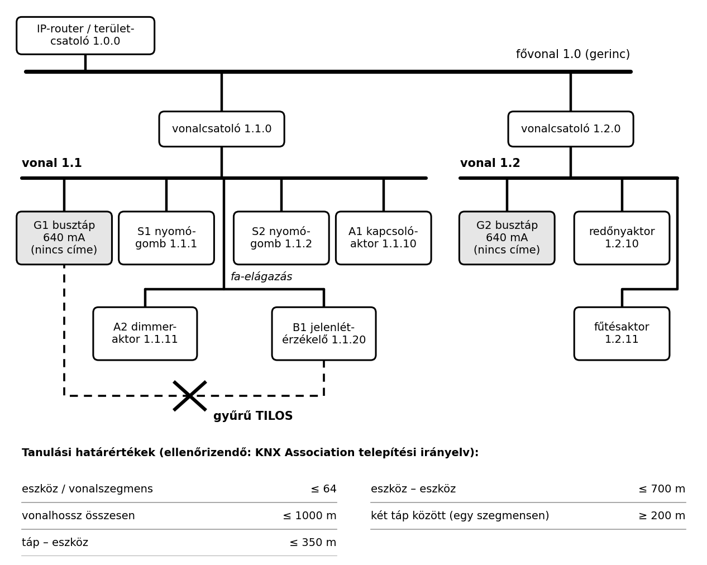
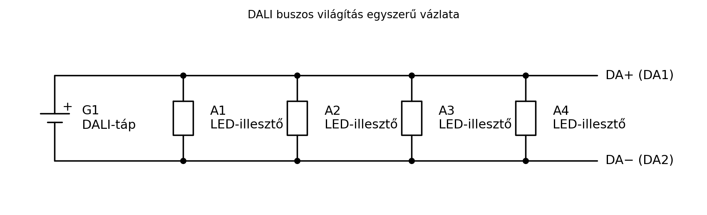
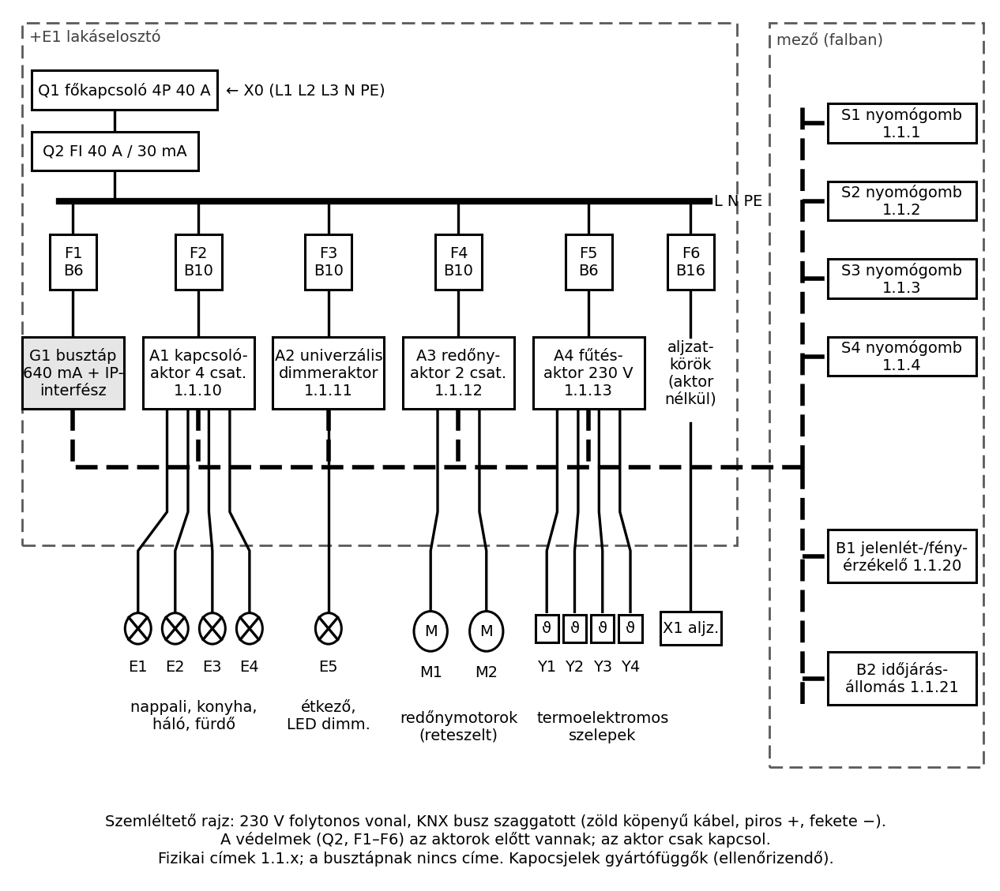

![KNX buszos kapcsolás egyszerű vázlata: buszrész és 230 V-os lámpakör - Szemléltető vázlat: a G1 busztáp, az S1 buszos nyomógomb és a K1 kapcsolóaktor párhuzamosan csatlakozik a két buszérre (+ és −); a buszérek között nincs közvetlen összeköttetés. A nyomógomb nem zárja rövidre a buszt, hanem táviratot küld; a K1 aktor relékimenete (K1.1) a külön, 230 V-os körben az F1 kismegszakító után a fázist kapcsolja az E1 lámpatestre, amely az N-re zárul, teste a PE-re csatlakozik. A rajz nem helyettesíti a gyártói bekötési útmutatót.](assets/ve072-diagram-1.png)
Hagyományos épületvillamosságnál a kapcsoló a lámpát közvetlenül, saját erekkel vezérli. Ha egy lakásban öt kapcsoló és öt lámpa van, akkor öt különálló áramkör fut a kapcsolókhoz és a lámpákhoz. Ha később egy új mozgásérzékelőt szeretnénk beépíteni, vagy egy kapcsolóról másik lámpát is működtetnénk, gyakran falat kell vésni, új vezetéket húzni és új kötődobozt szerelni.
A busz-alapú épületautomatika ezt a logikát megfordítja. A kapcsoló és a lámpa már nem közvetlenül egymáshoz tartozik, hanem egy közös táp- és adatbuszhoz. A kapcsoló megnyomásakor távirat (telegram) megy a buszra, a lámpát vezérlő aktor pedig megkapja a táviratot, és bekapcsol. Ez hasonlít a számítógépes hálózatokhoz, ezért a Számítógépes hálózatok és adatkommunikáció alfejezetben tanult elvek itt is felhasználhatók.
Figyelem. A buszrendszer kényelmes, rugalmas és bővíthető, de bevezetése nem jelenti azt, hogy a hagyományos, szabványos érintésvédelmi és túláramvédelmi ismereteket el lehet hagyni. A 230/400 V-os áramköröket ugyanúgy meg kell méretezni, védeni, mérni és dokumentálni, mint egy hagyományos rendszernél. A buszos eszközök táplálását is az érintésvédelmi és tűzvédelmi szabályok szerint kell kialakítani.
Az alábbi kapcsolási vázlat a buszos rendszer egyszerű szerkezetét mutatja: a busztáp és a buszeszközök párhuzamosan csatlakoznak a busz két erére (+ és −), a lámpát pedig egy külön, 230 V-os áramkör táplálja.
A vázlatban S1 egy buszos nyomógomb, amely érintéskor a buszra ír egy „én S1 vagyok, megnyomtak” táviratot. A K1 aktor figyeli a buszt, felismeri, hogy ez a távirat neki szól, és behúzza a reléjét. A relé érintkezője a 230 V-os lámpakört kapcsolja. A 230 V-os lámpakört hagyományos módon a kismegszakító védi, és az aktor relékimenete kapcsolja; a lámpa és a védővezető bekötése az épületvillamossági szabályok szerint történik.
Rajz–valóság–mérés hármas. A circuit
rajzon a busz külön van vezetve a 230 V-os áramkörtől. A valós
szerelésnél ezt a távolságot és a bekötést is ellenőrizni kell: a
buszkábelt tilos a 230 V-os erekkel azonos kötődobozban, azonos
védőcsőben vagy azonos kábeltálcán úgy vezetni, hogy az érintésvédelmi
és jel-átviteli szabályok sérüljenek. A mérés során a busz
tápfeszültségét és a távirat-átvitelt is ellenőrizni kell.
Definíció. A busz-alapú épületautomatika olyan rendszer, amelyben a résztvevők közös átviteli közegen (buszon) keresztül, címzett táviratokkal cserélnek adatot. A rendszerben a bemeneti eszközök (nyomógombok, érzékelők) adják a jeleket, a kimeneti eszközök (aktorok) hajtják végre a parancsokat.
A busz topológiája szabadabb, mint egy hagyományos vezérlés, de nem korlátlan. A KNX TP (twisted pair, csavart érpár) buszon fa-, csillag- vagy vegyes topológia alakítható ki; gyűrű nem engedélyezett. A hálózat méretét eszköz- és feszültségesés-korlátok határolják (ellenőrizendő: aktuális KNX-topológiai adatok a gyártótól vagy szabványos KNX-dokumentációból).
Címrendszer. Minden buszkészüléknek van egyedi fizikai címe, ami az eszközt a hálózaton azonosítja. A címzés hasonló a hálózati IP-címzéshez, de egyszerűbb: a fizikai cím három részből áll: terület.vonal.eszköz, pl. 1.1.15 = 1. terület, 1. vonal, 15. készülék. A csoportcím a funkciót jelöli, általában háromszintű formában: főcsoport/középcsoport/alcsoport, pl. 2/1/0 (ellenőrizendő: KNX Association dokumentáció).
Csoportcímek és távirattovábbítás. A csoportcím a funkciót azonosítja. Ha egy nyomógombot és egy aktort ugyanarra a csoportcímre helyezünk, akkor a nyomógomb által küldött táviratot az aktor végrehajtja. A csoportcímzés fontos előnye, hogy egy nyomógomb több csoportcímhez is tartozhat, így egyszerre kapcsolhat több fogyasztót, vagy indíthat egy világítási jelenetet.
ETS-projekt. Az ETS (Engineering Tool Software) a KNX-eszközök tervezésére, címzésére, programozására és diagnosztikájára szolgáló szoftver. A szerelő az ETS-ben létrehoz egy projektet, felveszi a készülékeket, beállítja a fizikai címeket és a csoportcímeket, majd letölti a konfigurációt az eszközökre. Az ETS a projektet dokumentumként is tárolja, ezért a későbbi módosítás és hibakeresés is könnyebb.
Szabvány. A KNX az épületautomatika nemzetközi szabványa, melyet európai szabványként is elismernek (EN 50090, ISO/IEC 14543 sorozat – ellenőrizendő: pontos hivatkozás). A szabványosítás célja, hogy a különböző gyártók KNX-eszközei együttműködjenek egy buszon.
Kiinduló helyzet. A villanyszerelő lakáselosztótól a szobákig húz vezetékeket. A buszos rendszerben a 230 V-os kábelek mellett egy buszkábelt is el kell helyezni. A KNX TP esetén jellemzően egy speciális, csavart érpárú, árnyékolt buszkábel szolgál a buszra (pl. YCYM 2x2x0,8, ellenőrizendő: aktuális jelölés). A két érpár közül az egyik (piros = +, fekete = −) a buszjel, a másik (sárga–fehér) tartalék. Az árnyékolást és a kísérőeret a KNX telepítési irányelvek szerint nem kötjük be és nem földeljük (ellenőrizendő: KNX Association / gyártói útmutató).
A busz tápfeszültsége névlegesen 29 V egyenáram, de a buszeszközök szélesebb tartományban működnek, és a táviratok váltakozó jelekkel ülnek ezen az egyenfeszültségen. A busztáp áramfelvételét és a vonal eszközeinek áramigényét össze kell vetni; egy vonalra csak meghatározott számú eszköz telepíthető (ellenőrizendő: topológiai és áramterhelési határok).
A buszkészülékek bekötése gyártónként eltérő, de a csavarozható vagy
rugós kapcsokon általában a buszpólusok (+, -
vagy piros/fekete jelölés) a készülék hátoldalán vagy külön csatlakozón
érhetők el. A bekötésnél ügyelni kell a pólushelyes bekötésre, mert a
rendszer érzékeny lehet a felcserélt vezetékre. A buszkábelt a 230 V-os
vezetékektől elkülönítve kell vezetni, hogy elkerüljük a zavaró
átbeszélést és a szigetelési hibák kockázatát.
A kábel felépítését és a bekötés módját az alábbi ábra mutatja. Az (a) részen az 1 köpeny (KNX-kábelen jellemzően zöld) alatt a 2 alufólia árnyékolás és a 3 kísérőér, belül a két csavart érpár: a 4 piros (+) és fekete (−) a busz, az 5 sárga és fehér a tartalék. A (b) rész a dugaszolható 6 buszcsatlakozót mutatja: a piros fele a +, a sötétszürke fele a − pólus; a bejövő és a továbbmenő kábel azonos színű erei ugyanarra az oldalra kerülnek (7 átfűzés). A 8 tartalék pár visszahajtva marad, a 9 árnyékolást és kísérőért a KNX telepítési irányelv szerint (ellenőrizendő) nem kötjük be, hanem visszavágjuk és szigeteljük.
A csatlakozó előnye, hogy a készülék a busz megszakítása nélkül kiemelhető. Tipikus hiba a felcserélt pólus (piros a szürke oldalon) és a túl rövidre vágott tartalék pár. A HTML-kiadásban a részekre mutatva a szerepük olvasható.
Rajz–valóság–mérés. A busz mérésénél digitális multiméterrel ellenőrizhetjük a tápfeszültséget, de a távirat-átvitelt oszcilloszkóppal vagy buszdiagnosztikai eszközzel vizsgálhatjuk. A telepítés előtt a buszkábel folytonosságát és a busz tápellátását ellenőrizni kell. Ha a busz- vagy adatkábel épületbe lép (kültéri érzékelő, melléképület), az adat- és buszvonali túlfeszültség-védelmet is meg kell tervezni: Túlfeszültség-védelmi eszközök (SPD): típusok és beépítés.
A busz kábelezésének nagyobb léptékű szerkezetét – vonalak, csatolók, tápok, címek – az alábbi topológiaábra mutatja.

Ábraolvasás. A fizikai cím a készülék helye a topológiában: az 1.1.10 az 1. terület 1. vonalának 10. készüléke, a vonalcsatoló a vonal 0. címét kapja (1.1.0), a területcsatoló vagy IP-router a terület 0. vonalán ül (1.0.0). A busztápnak nincs fizikai címe, de minden vonalnak saját busztáp kell: a G1 csak az 1.1, a G2 csak az 1.2 vonalat táplálja, mert a vonalcsatoló a tápfeszültséget nem viszi át. A csatoló a táviratokat is szűri: csak azt engedi tovább a másik vonalra, amelyre ott szükség van, így az egyik vonal forgalma nem terheli a többit. A vonalon belül fa-elágazás megengedett, a kábelt azonban soha nem zárjuk gyűrűvé. Ha egy vonal megtelik vagy túl hosszú lesz, nem „toldunk”, hanem új vonalat nyitunk saját vonalcsatolóval és táppal.
Helyzet. Egy irodában 40 lámpatestet szeretnénk fényerő-szabályozni, csoportokra osztani, esetleg jelenlét-érzékelőkhöz rendelni. Hagyományosan ehhez minden lámpatesthez külön fényerő-szabályzó és sok vezeték kellene. A DALI (Digital Addressable Lighting Interface) ezt a világítási vezérlést két buszérre, címzett táviratokkal oldja meg.
Definíció. A DALI egy világítástechnikai buszrendszer, amely digitálisan, címzetten vezérli a DALI-kompatibilis előtéteket, LED-illesztőket és fénycsöves előtéteket. A DALI busz jellemzője, hogy minden DALI-egység egyedi címmel rendelkezik (legfeljebb 64 rövid címmel, short address; ellenőrizendő: aktuális szabvány). A DALI a fényerő-szabályozást, a csoportosítást, a jelenlétfüggő vezérlést és az állapot-visszajelzést is támogatja.
A DALI busz egy kétvezetékes, polaritásfüggetlen rendszer (a legtöbb kialakításban), amelyen a táp és az adat együtt halad. A hálózatot egy DALI-táp (gateway vagy tápmodul) látja el, amely a busz feszültségét biztosítja, és lehetővé teszi a táviratok küldését. A DALI-eszközök bekötése tipikusan párhuzamosan történik a buszra.
Címzés és csoportok. A DALI-eszközöket programozással kell címezni. Az egyszerű DALI-vezérlő (pl. DALI-táp) vagy egy épületautomatikai gateway címzi fel a lámpatesteket. A DALI-eszközök csoportjai és jelenetei használhatók arra, hogy az irodában egyetlen nyomógomb egyszerre több lámpát állítson egy meghatározott fényerőre. A DALI kétirányú kommunikációjának köszönhetően a rendszer kiolvashatja a lámpatest állapotát, hibáját és működési idejét is.
Szabvány. A DALI az IEC 62386 sorozatban szabványosított (pl. IEC 62386-101, -201, ellenőrizendő: aktuális részek). A szabványosítás célja a különböző gyártók eszközeinek együttműködése.
Rajz–valóság–mérés. A DALI busz bekötése egyszerűnek tűnik, de a DALI-vezérlőerek nem törpefeszültségűek (csak alapszigetelésűek): hálózati feszültségű vezetékként kell kezelni őket, ezért a gyártói útmutató szerint a 230 V-os erekkel közös kábelben is vezethetők (pl. 5 eres kábel: L, N, PE, DA+, DA−), de érintésvédelmi szempontból nem tekinthetők SELV-nek (ellenőrizendő: IEC 62386-101 és gyártói útmutató). A KNX TP busz ezzel szemben SELV: külön kábelben, a hálózati erektől a KNX-irányelv szerinti elválasztással vezetendő. A szerelő a DALI busz feszültségét (üres buszon vagy nyugalmi állapotban) multiméterrel vizsgálhatja, a táviratokat pedig DALI-címzővel vagy diagnosztikai eszközzel elemezheti.
A gyakorlati bekötést az alábbi ábra mutatja. Az elosztóban az 1 kismegszakító védi a lámpakört, a 2 DALI-táp adja a busz feszültségét. Innen egy 3 ötérű kábel (pl. NYM-J 5×1,5: L barna, N kék, PE zöld-sárga, a két DALI-ér a fekete és a szürke – a terv jelölése szerint) fut az 1. lámpatest 5 DALI-illesztőjének 4 kapcsaira (L, N, PE, DA, DA), majd onnan párhuzamosan tovább a következő lámpatestre (7). A 6 lámpatest I. osztályú, ezért a PE-t bekötjük.
Bár a DALI-busz feszültsége kicsi (tipikusan kb. 16 V, gyártófüggő), az erek csak alapszigetelésűek, ezért a teljes kábelt hálózati feszültségűként kezeljük: bekötés és javítás csak feszültségmentesített lámpakörön. Az illesztőket sohasem kötjük sorba. A HTML-kiadásban a részekre mutatva rövid leírás jelenik meg.

Megjegyzés. Az ábrán a DALI-illesztők párhuzamosan csatlakoznak a buszra; a gyakorlatban a busz polaritás-függetlenségét és a távolság-/árnyékolási előírásokat a gyártói adatlap és a szabvány rögzíti.
Egy valódi KNX-es lakásban a buszos készülékek nagy része a lakáselosztóban, DIN-sínen ül: a busztáp, az aktorok és az IP-interfész. A következő rajz egy ilyen elosztót és a hozzá tartozó mezőoldali készülékeket mutatja egy lapon (a betűjelek a könyv konvenciója szerint: főkapcsoló Q1, áram-védőkapcsoló Q2, kismegszakítók F1–F6).

Ábraolvasás. A túláram- és a hibavédelem (Q2, F1–F6) az aktorok előtt van: az aktor csak kapcsol, a kör védelmét nem helyettesíti. Minden aktorcsatorna terhelhetőségét a gyártói adatlapból ellenőrizni kell a terhelés fajtája szerint (ohmos AC-1, motoros AC-3, kapacitív és LED-terhelés külön megadva); egy 16 A-es csatorna LED-meghajtókból sokszor csak töredékét bírja. A redőnyaktor két kimenete (fel/le) reteszelt, hogy a motor egyszerre ne kapjon mindkét irányra feszültséget. A busz (szaggatott) a G1-től indul, és párhuzamosan felfűzi az aktorokat és a mezőben a nyomógombokat, érzékelőket; a 230 V-os fogyasztók csak az aktorokkal vannak összekötve. A buszkábel a falban külön csőben fut, a szerelvénydobozban a 230 V-os vezetéktől elválasztva – ennek tervezési szabályait az Intelligens épület: tervezés, üzembe helyezés, energiahatékonyság alfejezet tárgyalja.
Csatorna-kiosztás (szemléltető csoportcímekkel; a csoportcímek rendszere a tervező döntése):
| Aktor-csatorna | Fogyasztó | Kismegszakító | Kábel | Fizikai cím | Csoportcím (kapcsolás) |
|---|---|---|---|---|---|
| A1.1 | E1 nappali világítás | F2 B10 | NYM-J 3×1,5 | 1.1.10 | 1/0/1 |
| A1.2 | E2 konyha világítás | F2 B10 | NYM-J 3×1,5 | 1.1.10 | 1/0/2 |
| A1.3 | E3 háló világítás | F2 B10 | NYM-J 3×1,5 | 1.1.10 | 1/0/3 |
| A1.4 | E4 fürdő világítás | F2 B10 | NYM-J 3×1,5 | 1.1.10 | 1/0/4 |
| A2.1 | E5 étkező, LED, dimmelhető | F3 B10 | NYM-J 3×1,5 | 1.1.11 | 1/1/1 (kapcsolás), 1/1/2 (fényerő) |
| A3.1 | M1 redőny, nappali | F4 B10 | NYM-J 4×1,5 (fel, le, N, PE) | 1.1.12 | 2/0/1 (fel/le), 2/0/2 (állj) |
| A3.2 | M2 redőny, háló | F4 B10 | NYM-J 4×1,5 | 1.1.12 | 2/0/3, 2/0/4 |
| A4.1–A4.4 | Y1–Y4 szelep (nappali, konyha, háló, fürdő) | F5 B6 | 2×0,75 gyári vezeték, sorkapocs | 1.1.13 | 3/0/1 … 3/0/4 |
| – | aljzatkörök | F6 B16 | NYM-J 3×2,5 | – | – |
Anyaglista és helyigény. A DIN-sínes buszkészülékek széles modulok, ezért a lakáselosztó tartalék helyét előre ellenőrizni kell. Szemléltető modulszámok (a valós érték gyártófüggő, ellenőrizendő: katalógus): Q1 4P 4, Q2 4P 4, F1–F6 6 × 1, G1 busztáp 4, IP-interfész 2, A1 4 csatornás kapcsolóaktor 4, A2 dimmeraktor 4, A3 redőnyaktor 4, A4 fűtésaktor 4 modul: összesen modul, tartalékkal legalább 48 modulos (négysoros) szekrény. Az elosztó kiválasztásának szempontjait a Lakás- és épületelosztó felépítése alfejezet adja. A redőnymotorok hagyományos, buszmentes bekötését és a reteszelés okát a Kapcsolók, dugaszoló aljzatok és szerelvények alfejezet mutatja; buszos rendszerben ezt a feladatot a redőnyaktor látja el.
KNX és hagyományos vezetékezés összehasonlítása. A hagyományos kapcsolásban a kapcsoló és a fogyasztó közötti logika a vezetékezésben van elrejtve. Minden új funkcióhoz új vezeték, új kapcsoló vagy új relé kell. A KNX-rendszerben a logika a konfigurációban – nem a falban – van. Ezért a KNX nagy előnye a rugalmasság: egy nyomógomb átprogramozható, a funkció megváltoztatható anélkül, hogy a falat megbontanánk.
Hátránya, hogy a buszos rendszer bonyolultabb tervezést és programozást igényel, a hibák pedig nem mindig szemmel láthatóak. A villanyszerelőnek ismernie kell a busz mérését, az ETS-projektet és a készülékek paraméterezését. A költségek is összetettebbek: a buszos készülékek drágábbak, de a szerelési idő és a későbbi módosítási igény gyakran kisebb.
DALI és KNX szerepe. A DALI a világítási eszközök digitális kommunikációját valósítja meg; a KNX az épületautomatika általános busza. Gyakori megoldás, hogy a KNX-rendszer egy DALI-gateway-n keresztül vezérli a DALI-buszra fűzött lámpatesteket. Ekkor a felhasználó a KNX oldali nyomógombbal kapcsol, a KNX a gateway-nek küld táviratot, a gateway pedig lefordítja azt DALI-parancsra. Ez a kombináció jól mutatja a buszrendszerek rétegződését.
Más buszrendszerek. Az épületautomatikában ismert még a Modbus, a BACnet, az M-Bus (fogyasztásmérés), az IP-alapú épületautomatika és a vezeték nélküli rendszerek. Ebben a könyvben ezeket csak megemlítjük, mert a vizsgán a KNX és a DALI a legfontosabb buszos rendszer.
Szabvány. Az épületautomatikai rendszerek kialakításánál a kisfeszültségű villamos berendezésekre vonatkozó MSZ HD 60364 sorozatot kell alkalmazni. A buszvezetékek is villamos berendezések, ezért az áramütés elleni védelmet (MSZ HD 60364-4-41), a vezetékek méretezését (MSZ HD 60364-5-52) és a felülvizsgálatot (MSZ HD 60364-6) ugyanúgy be kell tartani. Emellett a KNX- és DALI-szabványok előírják a busz topológiáját, a tápáramot, a kábelezést és az elektromágneses összeférhetőséget.
Biztonság és megbízhatóság. A buszrendszerek gyakran életbiztonsági funkciókat is hordozhatnak (pl. vészvilágítás figyelése). Ezért a tervezésnél meg kell különböztetni a normál üzemű buszos funkciókat és a szabványos védelmi funkciókat. A védővezető soha nem építhető a buszos táviratokra; a védővezetőt mindig folytonos, mechanikailag rögzített vezetőként kell kiépíteni. A hálózati feszültségű áramkörök védelmét nem szabad a buszos reléktől függővé tenni. A buszrendszerben a tápellátás kimaradása vagy a busz sérülése legfeljebb a komfortfunkciókat érintheti, a biztonsági funkciókat nem.
Bővíthetőség. A KNX és a DALI rendszerek jól bővíthetők, mert új eszközök csatlakoztathatók a buszra, és új csoportcímekkel vehetők fel. Ugyanakkor a bővítés is tervezést igényel: ellenőrizni kell a tápáramot, a busz hosszát, az eszközök számát és a dokumentációt. A bővítés után a rendszert újra kell mérni, és a jegyzőkönyvet aktualizálni kell.
Egy kisebb irodaházban a bérlő azt kéri, hogy a világítás jelenlétfüggő legyen, és a tárgyalóban jeleneteket lehessen kapcsolni. A villanyszerelő a lámpatestekhez DALI-illesztős LED-paneleket szerel. A lámpatestek 230 V-os táplálása a mennyezeti áramkörből jön, a DALI-busz pedig a lámpatestek DALI-kapcsaira kerül. A tárgyaló nyomógombja DALI-nyomógombillesztőhöz (bemeneti egységhez) csatlakozik, vagy DALI-s nyomógomb kerül a buszra.
Az üzembe helyezés során a szerelő laptoppal vagy DALI-kézi programozóval felcímzi a lámpatesteket, majd csoportokat hoz létre. A tárgyaló lámpái egy csoportba kerülnek, a nyomógomb egy jelenetet aktivál, amely 80%-os fényerőt állít be; a jelenlétérzékelő utánfutási ideje 15 perc. A rendszer kipróbálásakor a szerelő megfigyeli, hogy a távirat a nyomógombból az összes lámpatesthez eljut, és a lámpatestek visszajelzik az állapotot.
A tanulság: a buszos rendszer üzembe helyezése nem csupán összekötés, hanem programozás és ellenőrzés is. Aki kihagyja a címzést vagy rossz csoportcímet ad meg, az gyakran ugyanolyan hibát keres, mint egy laza sorkapocsnál.
Hiba 1: „A buszrendszer nem igényel vezetékméretezést.” Ez téves. A 230 V-os fogyasztói áramköröket a buszos aktorok mögötti oldalán is a megszokott szabályok szerint kell méretezni, túláramvédelemmel ellátni és hurokimpedanciát mérni. A buszos rendszer csak a vezérlőjelet digitalizálja, a teljesítményt nem.
Hiba 2: „A DALI busz polaritásfüggetlen, tehát a pólusokat sosem kell ellenőrizni.” Bár a DALI-busz sok eszköznél polaritásfüggetlen, nem mindenütt. A bekötés előtt mindig ellenőrizni kell a gyártói adatlapot. A polaritás felcserélése adott eszköznél hibás működést okozhat.
Hiba 3: „A busz táviratai nem érnek el a nagy távolságra, ezért a táp feszültségét növelem.” A busztáp feszültségét nem szabad önkényesen növelni. A hosszabb vonalak tervezésénél a topológiai korlátokat, a busz hosszát és a tápáramot kell betartani. A helyes megoldás a szabályos szegmens-/vonalbővítés.
Hiba 4: „A buszos eszközök nem igényelnek védővezetőt.” A busztápok és aktorok 230 V-os táplálása esetén a védővezető bekötése kötelező. A védővezetőt soha nem szabad a busz távirataival összekeverni.
Biztonsági korlát: az aktorok, busztápok és DALI-vonalak környezetében hálózati feszültség van. Feszültség alatti mérést csak jogosult személy végez; a 230 V-os oldali beavatkozás (és DALI-érnél minden bontás) előtt az öt biztonsági szabály szerint feszültségmentesítünk (lásd Villamos munkavégzés biztonsága: az öt szabály és a munkaengedély).
A hibát rétegenként szűkítjük: fizikai (táp, polaritás, zárlat) → címzés → logika (csoportcím, DPT, paraméter) → 230 V-os oldal. Ha a hiba az IP-oldalon (IP-interfész, KNX IP) jelentkezik, a Számítógépes hálózatok és adatkommunikáció alfejezet „Hibakeresés lépésről lépésre” módszerét alkalmazd.
| Jelenség | Réteg | Mérés, eszköz | Lehetséges ok | Teendő |
|---|---|---|---|---|
| KNX: a buszfeszültség 0 V | fizikai | multiméter a táp kimenetén és a vonal végén | táphiba, kihúzott csatlakozó, zárlat a két ér között | szakaszolás a csatlakozók kihúzásával, hiba javítása |
| KNX: a feszültség a távoli ponton 21 V alatt (ellenőrizendő határ) | fizikai | mérés a legtávolabbi eszköznél | túl sok eszköz vagy túl hosszú vonal, rossz kötés | kötések ellenőrzése, vonalbővítés vagy második táp a szabály szerint |
| KNX: egy eszköz nem programozható | címzés | programozó gomb és LED, ETS-diagnosztika | felcserélt polaritás, hibás eszköz, kétszer kiosztott fizikai cím | polaritás és cím ellenőrzése |
| KNX: a gomb távirata látszik, az aktor nem kapcsol | logika | ETS csoportmonitor | az aktor objektuma nincs a csoportcímen, nincs letöltve | összerendelés, letöltés |
| KNX: az aktor LED-je jelzi a kapcsolást, a lámpa nem ég | 230 V | (jogosult) feszültségmérés az aktor be- és kimenetén | leoldott kismegszakító, hibás lámpa vagy vezeték | hagyományos hibakeresés (Hibakeresés épületvillamossági modelleken) |
| DALI: egy lámpa csoportparancsra nem reagál, egyedi címre igen | címzés | címzőszoftver, csoportlista | nincs a csoportban | csoport-hozzárendelés |
| DALI: két lámpa együtt reagál egy egyedi címre | címzés | címzőszoftver | címütközés | újracímzés a gyártói ütközésfeloldó funkcióval |
| DALI: a táp „buszhibát” jelez, a busz 0 V | fizikai | feszültségmentesítés, a DA-erek leválasztása, szigetelés- és folytonosságmérés (Mérések I.: folytonosság, szigetelési ellenállás, földelés); az elektronikát a szigetelésmérés előtt le kell kötni | zárlat a DA-ereken, vagy 230 V került DA-érre (felcserélt erek az ötérű kábelben) | bekötés javítása, a táp és az illesztők ellenőrzése |
Kidolgozott eset. Egy KNX-bővítés után a vonal új szakaszán semmi nem működik: a táp mellett 29 V, a bővítés elosztódobozánál 0 V mérhető. A csatlakozókat sorban ellenőrizve az egyik ponton a tovamenő kábelből a sárga–fehér tartalék érpárt kötötték be a piros–fekete helyett, egy másik készülék csatlakozóját pedig felcserélt pólussal dugták be. A javítás után a feszültség mindenhol megvan, az eszközök programozhatók. A két hibát és a javítást a dokumentációban rögzítjük, a bővítést pedig eszközönként újra teszteljük.
Gyakorlás: ennek az alfejezetnek a kidolgozott példái, gyakorlatai és megoldással ellátott feladatai az Összefoglaló feladatgyűjtemény villanyszerelő tanulóknak című kötet 20.3 szakaszában találhatók.
A busz-alapú épületautomatika a kapcsolási logikát a vezetékezésből a konfigurációba helyezi. A KNX TP rendszer csavart érpárú buszon, 29 V DC tápfeszültség mellett címzett táviratokat küld; a fizikai cím az eszközt, a csoportcím a funkciót azonosítja. Az ETS-projektben készül a címzés, a csoportcímzés és a letöltés. A DALI a világítási komponensek digitális vezérlésére szolgál, tipikusan kétvezetékes buszon; minden DALI-egység címzett, és a rendszer állapot-visszajelzést is ad. A buszos rendszerek előnye a rugalmasság és bővíthetőség, hátrányuk a programozási igény és az összetettebb hibakeresés. A 230 V-os áramköröket a buszos aktorok mögött is a hagyományos szabványok szerint kell méretezni, védeni és mérni. A védővezetőt és a tápellátást soha nem szabad a busz távirataival helyettesíteni. Az Intelligens épület: tervezés, üzembe helyezés, energiahatékonyság alfejezetben ezeket az elveket használjuk az intelligens épület komplex tervezéséhez.
A szöveg a KNX és DALI alapfogalmakat a szakterület általánosan ismert, stabil elvei alapján tárgyalja. A pontos szabványszámok, topológiai határok, buszfeszültség-értékek, eszközszám-korlátok és címzési szabályok gyártónként és kiadásonként változhatnak, ezért ezeket a KNX Association és a DALI Alliance aktuális dokumentációjából, valamint a gyártói adatlapokból kell ellenőrizni. A szabványhivatkozásoknál (EN 50090, ISO/IEC 14543, IEC 62386) a pontos részek és kiadások megállapításához az aktuális szabványkatalógust kell használni. A 230/400 V-os szerelési követelményeket az MSZ HD 60364 sorozat aktuális kiadásai és a hazai jogszabályok határozzák meg.